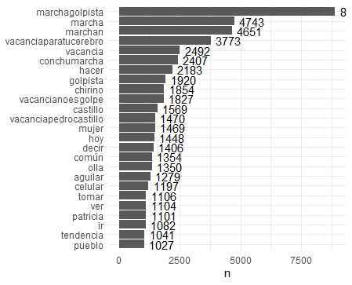
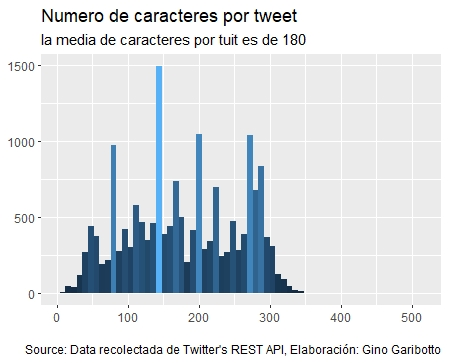
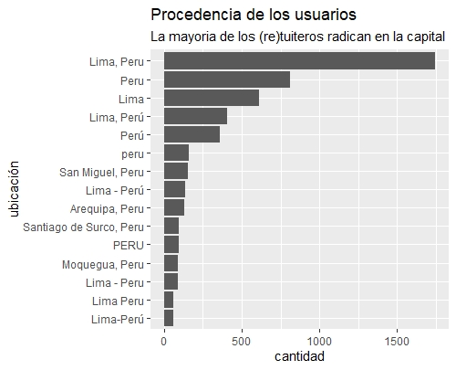
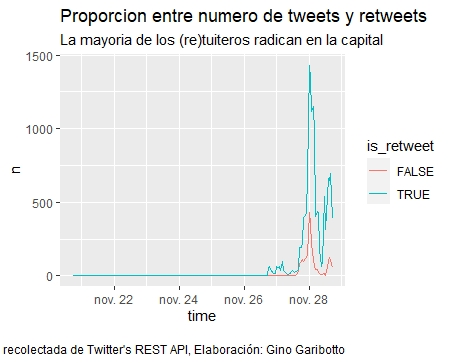
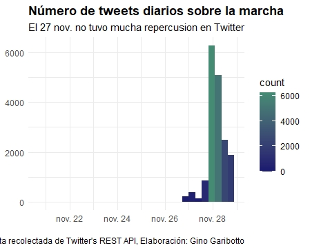
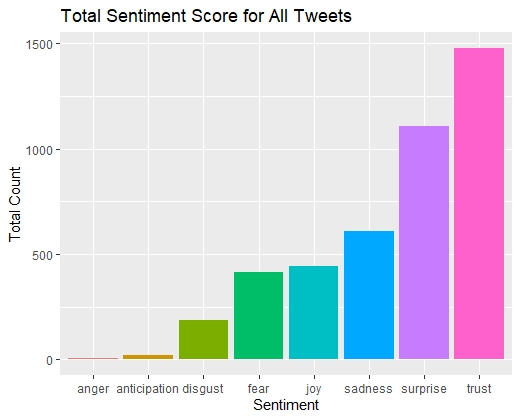

Sobremarcha y vacancia
Han pasado 120 días desde que Pedro Castillo asumió el mando, y lo que se siente en el ambiente es un cansancio de la diatriba fácil y el debate estéril entre el Gobierno y la oposición.
Mas allá del cambio en la narrativa, no hay ninguna ley qué signifique un cambio de relevancia para los votantes de Castillo. Ambos poderes no tienen frutos notables que mostrar, ambos están desgastados por la continuidad del piloto automático y la corrupción, siguen las mismas practicas con diferentes actores en los mismos escenarios.
El discurso del cambio suena vacío cuando no haces lo que predicas, como proponer el respeto a la meritocracia y proponer a una tendera para jefa de un organismo regulador. Así como este se han dado muchos otros casos de ejecutivos con más prontuario que currículo.
El deseo de vacar al presidente ha llevado a que las personas que promueven la vacancia piensen que dando un golpe de Estado desde el Congreso están garantizando la gobernabilidad y estabilidad democrática.
En la realidad, si la vacancia prospera, nos va a llevar a repetir el ciclo de presidentes con mandato muy corto como lo fueron Vizcarra y Francisco Sagasti. En el anecdotario quedan los pasos de Merino de Lama y Mercedes Araoz.
En este entorno se ha realizado una marcha contra Castillo, pidiendo su vacancia. Esta marcha del sábado 27N se ha caracterizado por poca asistencia, a pesar del dinero para cubrir los costos de transporte y propaganda. Se reafirma el escaso poder de convocatoria de la derecha peruana y la “perdida” (robo del celular) de un connotado dirigente. ¡¡Imagínense!!, si así se roban fuera del gobierno, ¿que no harán cuando regresen al poder ejecutivo?
La marcha del 27n puede calificarse de un fracaso porque no le ha dado la relevancia en prensa y medios a su principal promotor y financista Rafael López Aliaga, por el contrario, en esta oportunidad se ha destacado la figura de Patricia Chirinos por encima del acaudalado político.
Como se puede ver en la siguiente nube de palabras se destaca a Patricia Chirinos por encima de Rafael López Aliaga. En términos del potenciar la intención de votos para una eventual candidatura para la alcaldía de Lima o para la presidencia, este antecedente no fue un buen negocio político.
Durante la marcha no faltó el espíritu emprendedor del peruano en tiempos de crisis, se han visto fotos de venta de banderas con consignas escritas “no al comunismo”, gente vestida de jokers con los colores blanco y celeste característico del partido renovación popular y una venta de pollada para que los marchantes pueden retomar fuerzas al llegar a casa, entre otros negocios.


Curiosidades
Desde mi punto de vista hay tres curiosidades que sobresalen en esta marcha. Una congresista que se arrodilla en el estrado, ausencias importantes de los dirigentes – promotores de la vacancia en medios y el robo del celular a un dirigente.
La promotora de la marcha, la congresista Patricia Chirinos, se arrodilló en el estado para invocar la participación del pueblo peruano en el proceso de vacancia, parece que la congresista no entiende que el amor y el respeto, al igual que los votos y el apoyo popular, se merecen, no se ruegan.
El histrionismo de los expresidentes Alan García Pérez y Alejandro Toledo nos ha curtido de las grandes poses y pequeños pasos de nuestros políticos incapaces de ofrecer algo más que sacrificios al altar del dinero, sin plan alternativo al de este gobierno, envueltos en el papel de regalo de la sempiterna corrupción.
A la congresista Patricia le dijeron vacancia para para ti porque tu cerebro está en vacancia hace tiempo y eso se convirtió en un #hashtag muy importante para esta convocatoria de marcha ¨#VacanciaParatuCerebro¨.
Una característica que quiero destacar es que los grandes promotores de la marcha como los congresistas Roberto Chiabra, Gladys Echaiz, Norma Yarrow, y los dirigentes políticos Keiko Fujimori y Hernando De De Soto no aparecieron en la tarima, a diferencia de Toledo que se subía al estrado, aunque hubiera poco público presente.
Los actuales antagonistas al Gobierno me hacen recordar a la oposición venezolana cuya actividad proselitista la realizan a través de los medios de comunicación (se autodefinían de ¨mediáticos¨) y esa lejanía les hace conseguir menos votos de los que realmente pudieran obtener porque, como dice el refrán, si no estás en las duras no te aparezcas en las maduras.
Así, queda demostrado que nuestra tele dirigencia quiere gobernar un país como se ha teledirigido la economía: en piloto automático y con el mínimo esfuerzo. Tan igual como son las ganancias mercantilistas, logradas por ventajas extraeconómicas, con poco o nulo esfuerzo competitivo.
La DBA no ha entendido, no ha interiorizado, que un pueblo quiere cambios dentro del modelo, no cambio de modelo. Aun así, siguen azuzando el cuco del comunismo dentro de un gobierno que no ha alterado ninguna ley relevante. Que ha cambiado operadores políticos que son infelices aprendices y ejecutores de viejas mañas.
Finalmente, la marcha cerró con broche de oro, robándose entre ellos un celular cuya información – imagino - es más importante que el valor intrínseco del aparato. No es la primera vez que pasa en la marcha de la DBA, anteriormente, a Lourdes Flores también le robaron el móvil.



¿Que cambiar?
A la segunda vuelta llegaron los extremos de izquierda y de derecha en sus peores versiones. La alternativa a un Gobierno que prometió cambiar y no realiza ningún cambio de relevancia debe ser un Congreso más expeditivo en las leyes que promuevan la inversión, que haga control político de los nombramientos en los cargos públicos y que no echen atrás las reformas avanzadas en educación y transporte público.
Mientras la derecha no se presente como una alternativa real y viva del recuerdo del piloto automático, va a ser poco probable que logren vacar al presidente por medio de los votos del Congreso porque el Congreso no está demostrando ser mejor que el Ejecutivo sino ser la misma casta mediocre que busca preservar sus privilegios a costa de los demás.
Uno de los aspectos sustanciales del Gobierno de Castillo es que está permitiendo hacer un mejor control ciudadano a los nombramientos en los cargos públicos, un respeto a regañadientes a la meritocracia del puesto.
Este ejercicio de control social sobre los cargos públicos ojalá quedara como un precedente para que este y futuros gobiernos se sientan presionados a escoger entre personas con currículo en lugar que personas con prontuario, qué es lo que ha venido sucediendo hasta el momento.
Mayor control ciudadano va a servir para que no se sientan tan confiados que la voluntad popular es un cheque en blanco para los administradores de turno. Para que no usen al Ejecutivo como si fuera su chacra, donde puedan hacer y deshacer a su antojo. Esta es una enseñanza que está quedando de este proceso.

No importa la ideología, ser choro es una actitud nefasta para la gobernabilidad y la convivencia social. En Venezuela, acostumbrarse a la corrupción llevo a los votantes a ser indiferentes a la compra de los militares con prebendas en cargos públicos que le pudieran garantizar al régimen una gobernabilidad basada en las bayonetas. Esa es una consecuencia nefasta de acostumbrarse a la corrupción.
El Ejecutivo actual está lleno de aprendices de choros mientras que la oposición tiene gente con post grado o phd en la materia. Lo que más molesta no es que haya nuevas mafias porque antes ya había el “club de la construcción”, el caso Odebrecht y los “cuellos blancos”, sino que se predique hacer un cambio y en la práctica se mantienen las mismas prácticas de las que se quiere salir. Eso es lo que molesta, lo que jode.